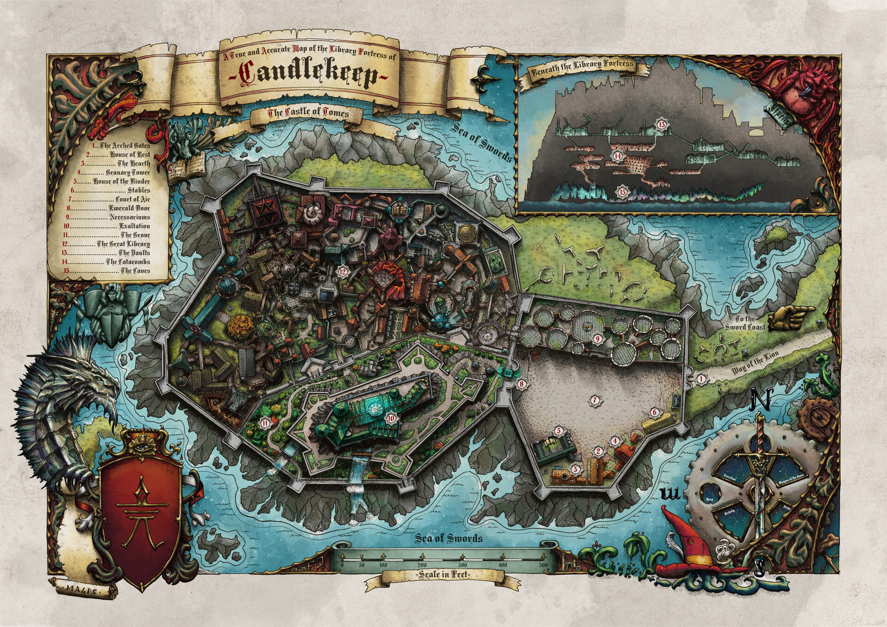
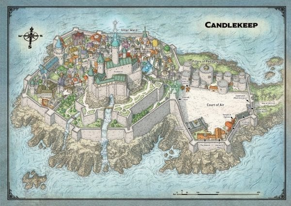
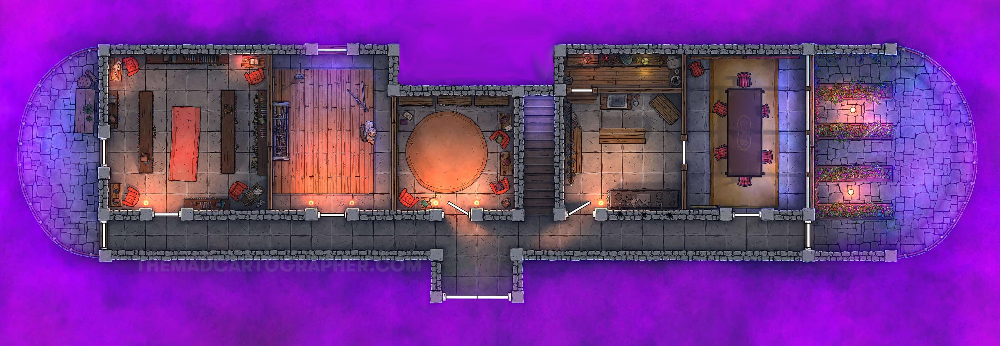

Subject And So It Begins From Dilyn Corner <dilyn.corner@tutanota.com> Date Fri, 28 Jan 2022 9:00:00 -0500 This is the initial session zero of the Bump in the Night campaign! Here you can find a brief introduction of our players, how they found themselves at this junction, and the events that unfolded during their first day together! Here is a quick run-down of the world we find ourselves in, and an introduction to how our party came together: The year is 1496 DR in the world of Faerûn. It's been a relatively quiet time since the Era of Upheaval. Of course, the lack of global terror threatening to consume Toril and the many who call this planet home doesn't mean there are a poverty of threats. Indeed, minor monster attacks and general crime seem to have been slowly increasing for the last few years. Traditionally, the ample guards and armies of Neverwinter and Baldur's Gate were able to keep large regions relatively safe, with small bands of adventurers making their way across the continent on their own missions keeping the smaller, more remote settlements in a shakey peace. But it seems as though most adventurers have disappeared; perhaps out of the lack of glory that came with the slaying of great beasts - a tarrasque hasn't been seen in quite some time, after all. All across the great plains, mountains, tundras, and marshlands of Faerûn merchants and travellers bring whispers of terrible tragedies. Kobolds sacking entire towns for taudry baubles, gnolls terrorizing farmers tending their fields, children disappearing in the middle of the night from their beds. Horrific stories of vampire attacks in places they would've never dared travel before are frequent tavern talk. There are even rumors of the grotesque aberrations of the underdark making themselves known to the world above, though most don't take this threat too seriously. But they have of course never seen a Beholder. The world is increasingly dangerous to the average civilian, and there are few willing, able, or interested in protecting them. This has left most villages with no one to help but each other, no one to defend but themselves. Small bands of fathers and mothers take up rotating night watches and patrols, farmers send their teenagers to the edges of their fields as scouts and lookouts, children are never left alone for too long. Unease runs throughout the land - a palpable fear of strangers and visitors permeates their shabby gates, even though they are quietly relieved when an able-bodied troupe makes their way to the tavern to earn coin. Scholars have busied themselves in the last few months in an effort to determine what could be causing this minor mayhem across their continent. Small-scale tragedies are not oft written about, and their research is proving fruitless thus far. Libraries have become some of the most frequently trafficked places by commoners, desperate to find a way to save themselves and their communities. This is where you fine travellers come in. You were all approached by a man in Beregost asking for your help. His fine robes and way of speaking left you with the impression that this fellow was a scholar of some sort, and he pleaded each of you in turn for assistance. For some reason, you all said yes to this fellow; perhaps it was his old age that made you sympathetic, or his promise of a favor returned and some coin for your labor. Maybe it was the fact that he was willing to finance your journey to find his friend, or maybe it was just boredom. Whatever it was, you each in turn agreed to this man's beseachment. You all met your companion at the gates to the large town where you found your helpee Kiril standing beside two carts. Luckily he had secured your means of travel, cutting the time to the Lion's Way in half. You made it to the point where the Lion's Way meets the Coast Way without much hassle, and broke off from your carts -- they were heading to Baldur's Gate, and could not afford to waste a single day going the wrong direction. So you walked down the Lion's Way for a few hours and eventually made camp, keeping watch in case the oddly safe road suddenly found itself to be quite dangerous. Just before sun rise, a few of your companions broke off with Kiril while the rest finalized their preparations and followed shortly after. You agreed to meet at Northwick for an early lunch before making the final leg of your short yet unusual journey. Along the way, you have inquired with Kiril about this mission. He insists it isn't terribly dangerous -- where you are going is perhaps one of the most secure places on the Sword Coast. The archmages of the great Library known as Candlekeep take their charge in defending their great works quite seriously, with ample wards and defenses "just in case". He's simply lost contact with a friend, and Kiril had promised them that should they not hear back in three days time, Kiril should make his way to Candlekeep to find him -- he must have found something so good, he lost track of time! The Great Library can be quite a maze, and you can lose yourself inside it quite easily if you aren't careful. The find-my-friend mission seemed safe and easy enough of a way to pass the time, and perhaps you had always wanted to visit Candlekeep; it is, after all, a modern marvel. So you all kept your word, and meet up at Northwick before the fun begins. We zoom in on Northwick. We see a human man with dirty, almost rusty looking chainmail and a trident walking down a dirt path accompanied by a tiefling, shorter than their companion and a bit pudgy, with wind chimes hanging from the horns atop their head. They make their way towards the tavern that marks the end of this road in the center of Northwick, and it is here they were told to meet up with the rest of the party who ventured off ahead to scout and ensure nobody found any surprises on their trip. Upon entering the tavern, they see a burly barman standing behind the bar, absentmindedly cleaning some glasses as he surveys their entrance. The man, Rindale, immediately walks to the bar and purchases a round of ale for his companions. Rindale and his tiefling companion Saccharine make their way to a long table in the middle of the room to find their benefactor Kiril sitting and talking with three others; Rhaena, a mid-twenties human woman with braided hair and pale skin, she looks well-built with a set of chainmail and a large greatsword sheathed at her side. Next to her is a somewhat disheveled looking tabaxi named Tazab (Tab for short), wearing a dark leather jacket and black pants. Across from them sits the young half-elf woman Brynn with wild red hair barely kept together by a few braids, her lithe build rather nondescript aside from a bear tooth she has strung across her neck by a lether cord. The other fellow at this table is Kiril, a man with stark white hair and a beard shaped like the wall of a ravine; he looks to be about sixty and not someone who would be travelling in this sort of area; he has bright blue robes with black accents on the edges and shoulders, a book suspended from his belt opposite a small purple bag. The party has a brief discussion about their mission over some morning ale and biscuits. They are trying to find out what happened to Kiril's friend, who goes by the name Ripper. They're a bit of an eccentric it seems, frequently looking into stories, myths, and legends, frequently disappearing on their missions of learning. Kiril informs the group that Ripper believed he was uncovering something of terrible import; he didn't share many details, but it certainly can't be good if Ripper is researching it. Here is a view of Candlekeep at an angle:  And a view from above. Don't mind the dugeon in the top right, it isn't supremely relevant:  The party makes their way to Candlekeep. It's an uneventful journey, and it seems that Kiril has covered the group's entrance to Candlekeep by providing the keepers with three tomes in exchange for their access to the Library. The party enters the Keep, and swiftly makes their way across the plaza and through a large emerald door. The group follows Kiril down winding alleys and passages, up stairs and past dozens and dozens of a wild assortment of differently constructed buildings. They eventually make their way to the top of a set of stairs with a fountain laid into the stone foundation of the landing marking the entrance to the primary chamber of the Great Library. The make their entry, and Kiril swiftly finds an acolyte in a grey smock to inquire as to the location of Fistandia's Study. He beckons the party to follow. At Kiril's behest, the party tries to follow their friend - he seems quite spry, and is travelling quite fast through these hallways and corridors packed with seemingly hundreds of people in grey robes. The books lining the walls don't seem to be in any particular order, many in wildly different languages and appearing to only be loosely connected to the other books on their shelves. Eventually, the party finds themselves outside of a closed door with words carved into the mantle above the door: "Fistandia's Study". The party makes their way in with Kiril, who quickly sets themselves to fervently search the spines of the books on all of the shelves which cover the walls of this room. He tells the party that he doesn't know what exactly they're looking for, but it should probably be "interesting or amazing". Miffed by the lack of help Kiril is offering, the party investigates various parts of the room. Tab scales a bookshelf and after quickly scanning the shelves determines that this is just a collection of... Flowery poetry? It all seems rather epic and poetic, like the telling of grossly inflated stories or over-exaggerated fictions. From their vantage, they see a book that two of their other companions are fiddling with, and recognizes the man on the cover: a rather accomplished sorcerer named Mordenkainen, known specifically for creating doors to small demiplanes and pocket dimensions. After investigating the book, they ask Kiril to decipher some arcane shorthand written in the margins of this book. After some extensive reading, humming, and glancing, Kiril looks up and says "Sanctuary!". A small silver bed appears at the ceiling of this room and slowly drops to the floor, with silver and gold strings spinning off of it until it reaches the floor, leaving what appears to be the shimmering face of a door! The door, while ethereal-looking, seems incredibly solid even though there is nothing behind it and it simply appeared out of nowhere. The door opens into a dark foyer with a small table and coat rack against the wall. All but Saccharine make their way into this large entryway to investigate the room. After a beat, Saccharine takes Kiril's arm in his and walks through the door. After breaching the threshold, the door swiftly slams shut behind them.  In an instant, the room's appearance changes entirely. The ten foot tall walls are now lined with mostly-burnt lit candles, the nice brick walls have become roughly hewn stone, and around the corners of the branching hallway before the party is a sickly green light. Rhaena, in response to this sudden change of appearance, attempts to sense any evil or celestial presence, and is met with the overwhelming odor of the putrid stench of decay -- there are undead in the room just ahead. The party slowly makes their way into this room and spy a few things: 1) The opposite wall is covered in bookshelves from floor ceiling 2) There is a book with a gilded "S" on the table between two of the chairs 3) There are three skeletons, each sitting in a chair Saccharine goes to inspect the books, and after some light quick purusing finds that almost all of the books appear to be the memoirs or diaries of some great arcanist named Fistandia. Tab and Bryn set about inspecting the room for traps. Bryn discovers that, while the rug and chairs seem quite odd or even creepy, the room doesn't harbor any hidden trap doors in the floor. Tab sees that the skeletons aren't in any way booby trapped, they just seem to be plain-old skeletons. Rhaena and Rin investigate one of the skeletons, Rin using the end of their trident to prod the jaw of the one in the southeast chair. Before the trident can find its mark, the skeleton seems to almost instantaneously come to life and grab the trident before it reaches its chin. Roll initiative. ________________________________________________________________________________ Dilyn Corner (C) 2020-2022